Tia Portal
Esta página é uma pequena introdução sobre o Tia Portal e como acessá-lo.
O que é o Tia Portal?
O TIA Portal é um software da Siemens utilizado para programar e configurar sistemas de automação industrial. Ele permite programar CLPs, configurar IHMs e realizar diagnósticos de equipamentos. No TIA Portal, é possível utilizar linguagens como Ladder (LAD), Function Block Diagram (FBD) e Structured Text (SCL), sendo muito utilizado em máquinas e linhas de produção industriais.
Como Acessar?
Na barra de Pesquisa, proucure por "Tia Portal".
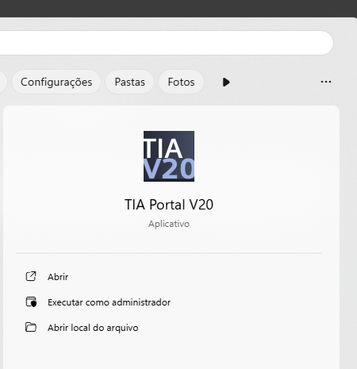
Na área inicial, clique em "Create new Project".
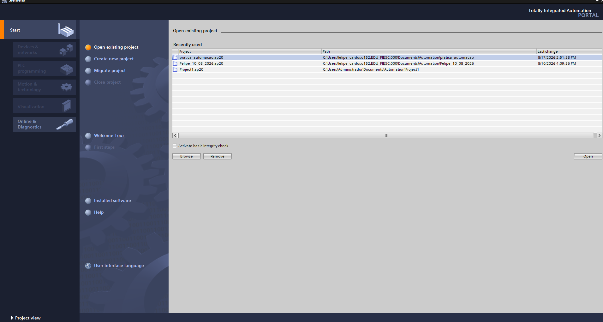
Coloque o nome em "project name:" e clica em "create".
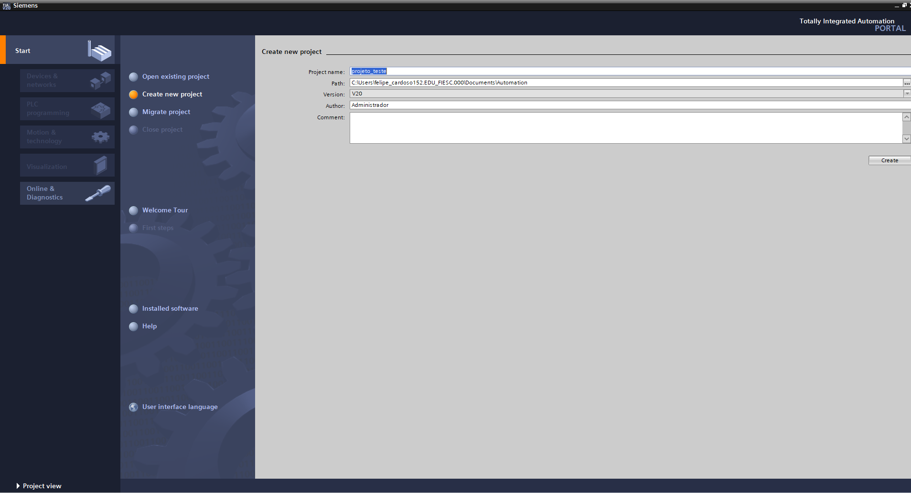
Na próxima tela, clique em "Configure a device" para fazer a configuração o dispositivo.
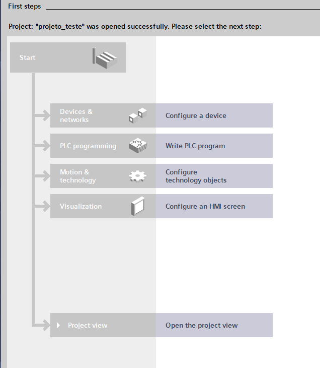
Logo em seguida, clique em "Add new device".
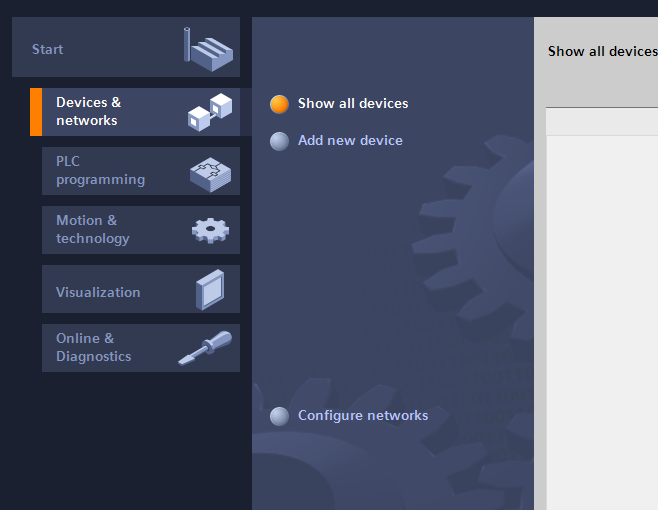
Já na escolha do dispostivo, clique em sequência no: Controllers > SIMATIC S7-1200 > CPU > CPU 1215C DC-DC-DC > 6ES7 215-1AG40-OXBO e termine clicando em "Add".
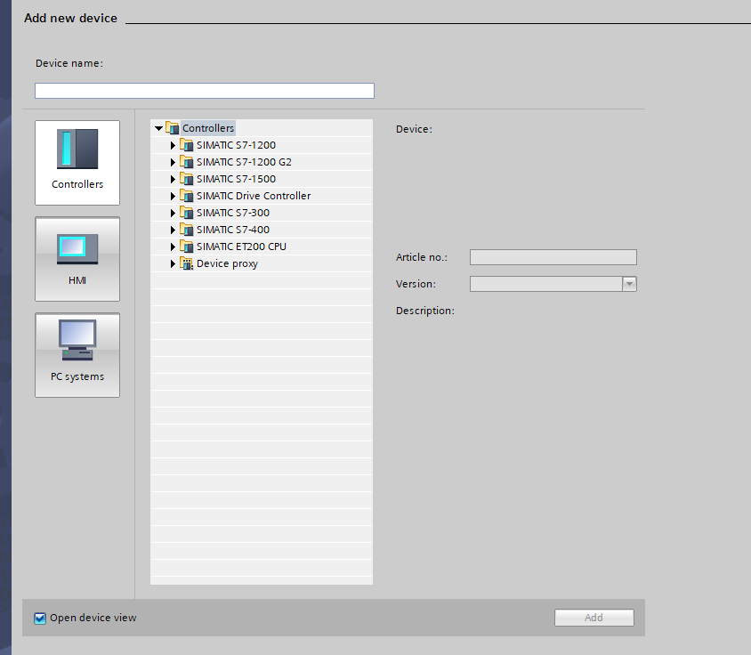
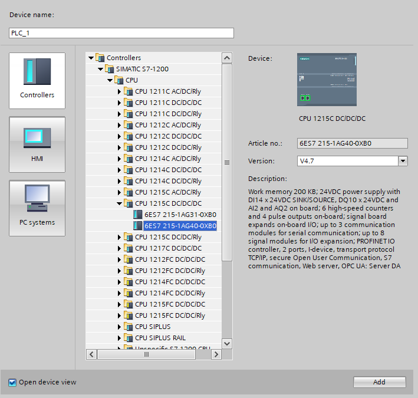
Aqui vai aparecer esta tela de configuração de segurança do clp. Na primeira página, desative a caixinha Protects the PLC configuration data from the TA PORTAL e clique em "Next>>".
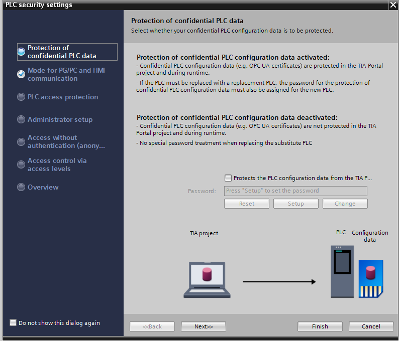
Na segunda parte, desativa a caixinha que diz "Only allow secure PG/PC and HMI communication" e clique em "Next>>".
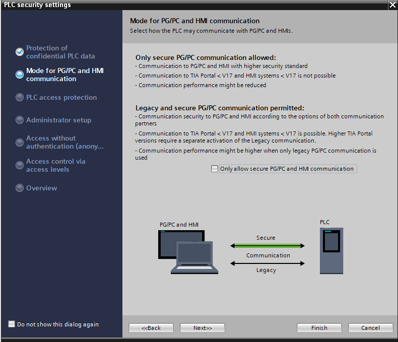
Na ultima parte, você vai clickar na caixinha que contem "Disable access control". Em seguida vai aparecer uma caixinha de mensagem avisando sobre desativar o acesso de controle, clique em "Ok" e depois em "Finish".
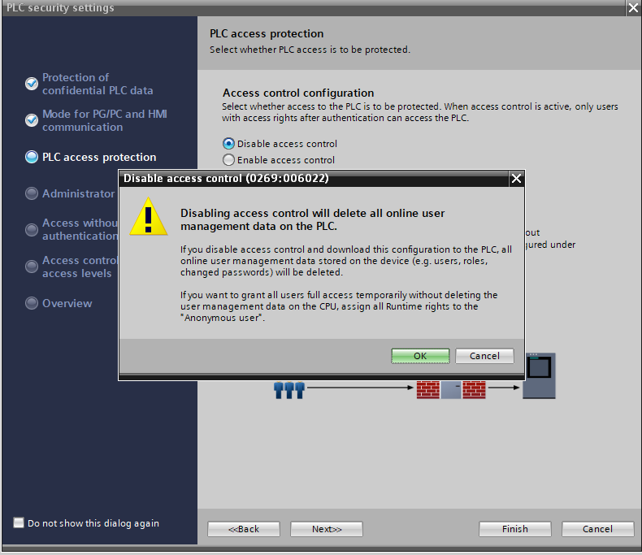
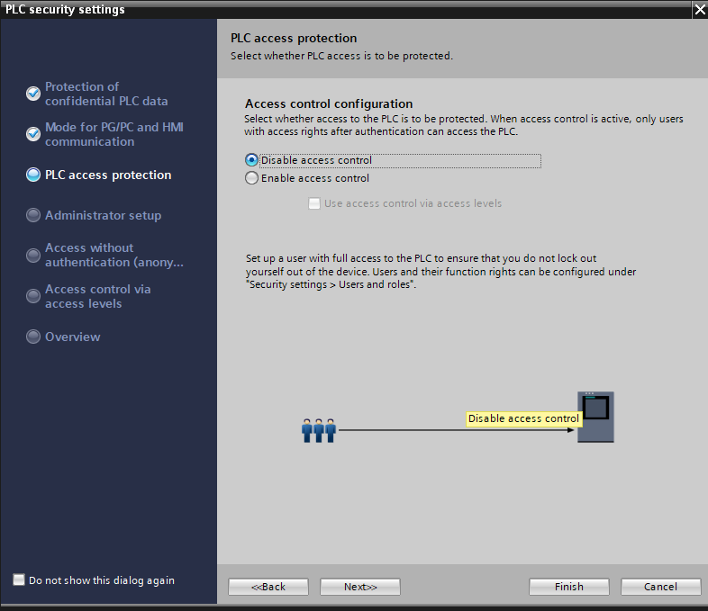
Depois de feito, você irá finalmente abrir a paga inicial do Tia Portal, pronto fazer e testar seus programas.
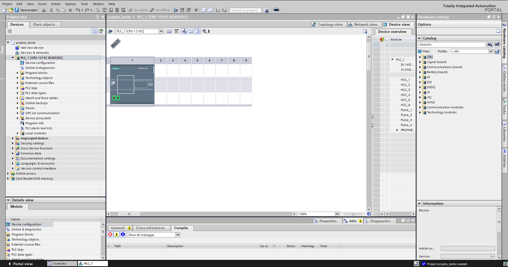